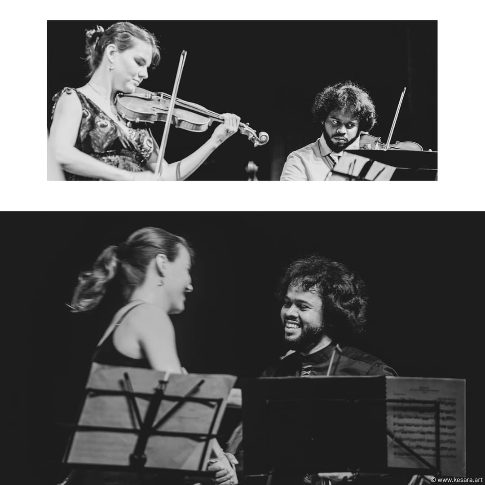
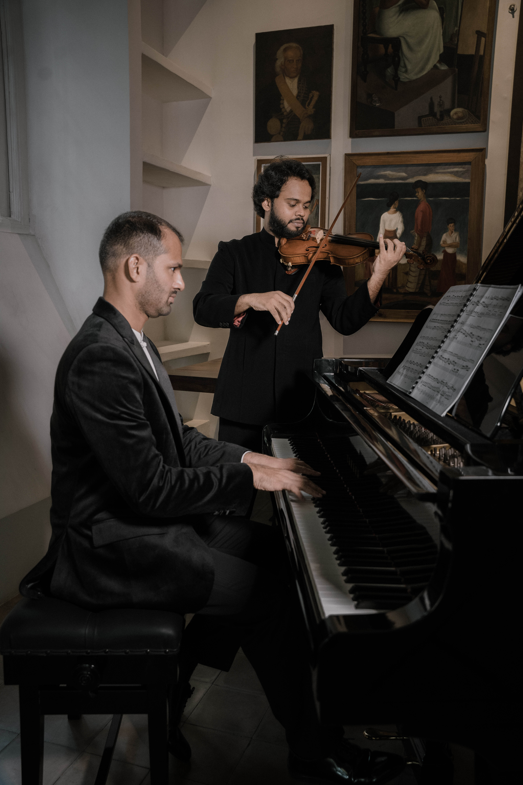
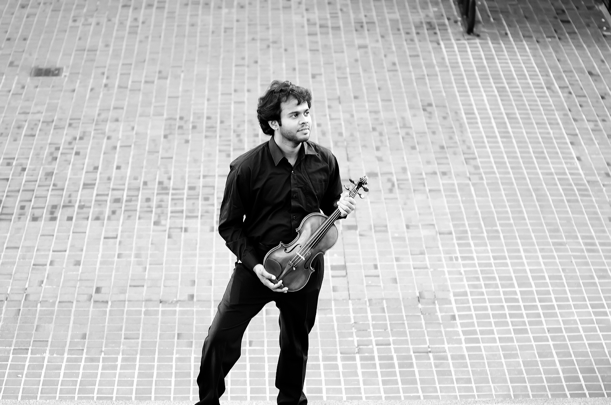
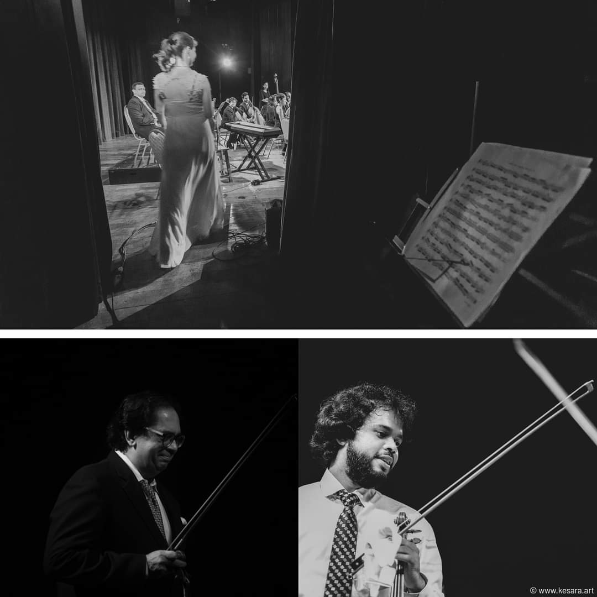

Sulara Nanayakkara
Violinist | Sri Lanka’s lyrical voice
Sulara Nanayakkara is widely regarded as one of the finest violinists to emerge from Sri Lanka. His musical journey began at the age of seven, and by seventeen he had already won the National Youth Orchestra competition. Driven by an insatiable thirst for excellence, Sulara pursued advanced degrees at the Royal Academy of Music in London and the Juilliard School in New York, studying under legendary pedagogues. His playing blends technical precision with an unmistakable warmth that moves audiences from Colombo to Carnegie Hall.
Currently, Sulara serves as the Senior Head Violinist of Chamber Music Colombo, where he leads the string section in groundbreaking performances that fuse Western classical traditions with Sri Lankan ragas. His interpretation of Bach's Chaconne has been called “spellbinding” by critics, and his 2024 tour raised funds for young musicians across the island.


Beyond the stage, Sulara is a dedicated educator and cultural ambassador. He regularly conducts masterclasses at the University of the Visual and Performing Arts in Colombo and has mentored dozens of young violinists who now perform in orchestras across Asia. His recent album, “Strings of Serendip”, features original arrangements of traditional Sri Lankan folk songs for violin and chamber ensemble, earning a nomination for Best Classical Album at the South Asian Music Awards.
With each performance, Sulara Nanayakkara continues to elevate the violin’s voice in South Asia. Whether interpreting Sibelius’ concerto or improvising on a baila tune, he remains a true master of his instrument — humble, expressive, and deeply connected to his roots. His upcoming season includes a residency at the Galle Music Festival and a collaboration with the Symphony Orchestra of Sri Lanka.


Sulara's artistry has taken him to prestigious venues including Wigmore Hall, Carnegie Hall, and the Colombo International Music Festival. Critics praise his “effortless bow control and deeply communicative phrasing”. He continues to expand the violin repertoire by commissioning new works from Sri Lankan composers.
